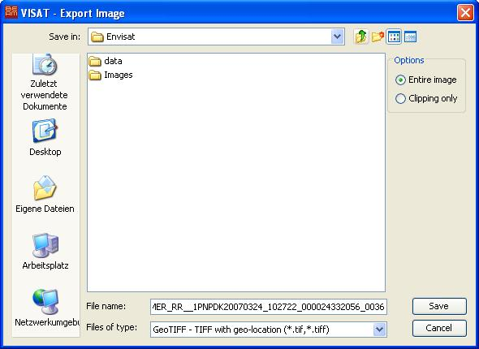

| Export Image | |
This command allows the export of the loaded image to an image file.
The save image dialog offers the possibility to choose whether the visible view (Clipping only) or the entire image with all drawables (e.g. graticule, ROI, pin ... ) should be exported.
The (presently) supported formats are:
